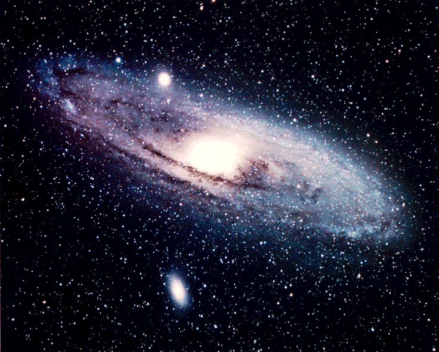

Figure 1-7
Like the galactic merry-go-round of our home galaxy, billions of stars swirl around the great galaxy of Andromeda. At over 2 million light-years from Earth, massive stars, many trillions of miles apart, appear as packed-together white dust. (Lick Observatory)
If this were a picture of our galaxy, our sun would be but a single dot on one of the outer spiral arms, about 30,000 light years from the center of our galaxy. A light beam from our Earth would take about 80,000 years to travel across the diameter of the galaxy. As the Earth revolves around our sun, the sun is moving at about 500,000 miles per hour, swirling around the galaxy as if caught in a gigantic hurricane. But even at this great speed, it takes the sun 250 million years to go around the galaxy once.